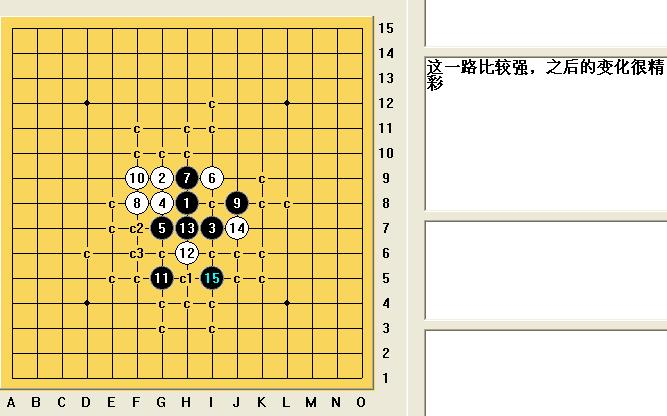
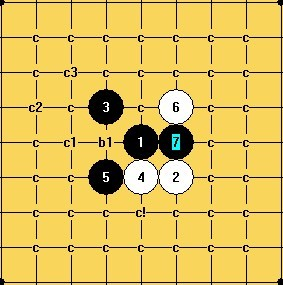
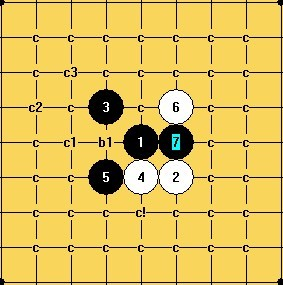

斜的一个问题
#1 斜的一个问题 作者：茗弈宽容 发表时间：2010-1-11 20:27:34
刚看到如慧姐姐和一个朋友下这个斜
=======上图对应的爱五子棋谱代码如下，以便你拆解：========
h8g9i7g8g7i9h9f8
======================================================
慧姐姐下了这个8考他，请问大家这个8黑有胜吗，怎么杀？威望奖励！
#2 Re:斜的一个问题 作者：极地剑客 发表时间：2010-1-11 21:17:59
黑胜的....#3 Re:斜的一个问题 作者：茗弈宽容 发表时间：2010-1-11 22:56:38
图呢？有图才有真相。#4 Re:斜的一个问题 作者：忧郁的双眼 发表时间：2010-1-11 23:28:15
=======上图对应的爱五子棋谱代码如下，以便你拆解：========
h8g9i7g8g7i9h9f8j8
======================================================
白的棋对黑没有影响
［ 茗弈小刀 于 2010-1-12 10:51:39 时奖励此帖[金币加 20 威望加1］
#5 Re:斜的一个问题 作者：潇洒 发表时间：2010-1-11 23:28:26
=======上图对应的爱五子棋谱代码如下，以便你拆解：========
h8g9i7g8g7i9h9f8j8f9g5h6h7j7e5f6f5
======================================================
［ 茗弈小刀 于 2010-1-12 10:51:53 时奖励此帖[金币加 20 威望加1］
#6 Re:斜的一个问题 作者：茗弈小刀 发表时间：2010-1-12 10:52:29
 你两副颜色出面当然就不摆了！
你两副颜色出面当然就不摆了！
#7 Re:斜的一个问题 作者：茗弈求学 发表时间：2010-1-12 10:55:49
潇洒老师个图，18防在右边怎么杀呢？
#8 Re:斜的一个问题 作者：wd1988 发表时间：2010-1-12 13:18:01
用这个15能胜，地毯有那么一点繁琐，但肯定能地毯的
=======上图对应的爱五子棋谱代码如下，以便你拆解：========
h8g9i7g8g7i9h9f8j8f9g5h6h7j7i5
======================================================
［此帖子已被 wd1988 在 2010-1-12 13:40:32 编辑过］
#9 Re:斜的一个问题 作者：wd1988 发表时间：2010-1-12 14:20:21
仔仔细细打了一个这个15的地毯，真的很犹豫要不要放出来。。。很多所谓的弱防地毯起来也很繁琐，但是我发出来之后可能永远也不会有人去看这些线路。。。有的分支我打了两三个必胜点，每一个都是心血，但可能永远也不会被别人发现。。。现在我明白了为什么很多人不愿意发谱，不是说他们小气或者什么版权问题，而是辛辛苦苦打的地毯放出去以后，99%的线路可能根本没人去看，也不会有人明白这99%的线路之中蕴含着多少东西。大多数人看到地毯谱，就是一个合并保存了事，真的是。。。很奇怪的感觉。
还是放出来吧，希望大家以后看谱的时候，怀着一种肃穆的心情。。。

［此帖子已被 wd1988 在 2010-1-12 14:21:10 编辑过］
［ sonix 于 2010-1-12 14:38:45 时花20金币送鲜花一朵］
［ 茗弈小刀 于 2010-1-12 14:49:42 时奖励此帖[金币加 20 威望加1］
［ 茗弈小刀 于 2010-1-12 14:51:06 时花20金币送鲜花一朵］
［ 满地风花愁不尽同学于 2014-5-17 21:24:37 时花20金币送鲜花一朵］
#10 Re:斜的一个问题 作者：潇洒 发表时间：2010-1-12 14:48:55
饿。。我的15不好胜啊
#11 Re:斜的一个问题 作者：茗弈小刀 发表时间：2010-1-12 14:50:46
潇洒SG的那个15可以在朵朵斜月谱里找找。#12 Re:斜的一个问题 作者：怪 发表时间：2010-1-12 17:27:53
 黑石老点，很久没见到了。
黑石老点，很久没见到了。
#13 Re:斜的一个问题 作者：小帮帮 发表时间：2010-1-13 18:02:09
斜月老定7，8是唯一的，我再整理一下，到时候弄个地毯上来
［此帖子已被 小帮帮 在 2010-1-13 18:06:21 编辑过］
#14 Re:斜的一个问题 作者：忧郁的双眼 发表时间：2010-1-13 18:06:02
你把那个B改成C
就NB了。。。
#15 Re:斜的一个问题 作者：小帮帮 发表时间：2010-1-13 18:58:09
 斜月老定7.rar

斜月老定7.rar

刚才好像传得还有些问题，所以进一步整理了一下，大家看看还有什么漏洞没有？
［ 茗弈小刀 于 2010-1-13 19:42:11 时奖励此帖[金币加 20 威望加1］
#16 Re:斜的一个问题 作者：千羽鹤 发表时间：2010-1-14 22:00:41
=======上图对应的爱五子棋谱代码如下，以便你拆解：========
h8i9g7h9g9i7i8h10g11
======================================================
这能杀不
#17 Re:斜的一个问题 作者：金瓜 发表时间：2010-1-15 8:32:21
=======上图对应的爱五子棋谱代码如下，以便你拆解：========
h8i9g7h9g9i7i8h10h6i10e9f8g8g6f9
======================================================这个15也可以杀
#18 Re:斜的一个问题 作者：金瓜 发表时间：2010-1-15 8:42:16
=======上图对应的爱五子棋谱代码如下，以便你拆解：========
h8i9g7h9g9i7i8h10h6i10e9f8g8g6f9f10e10d11e7e8e5
======================================================
=======上图对应的爱五子棋谱代码如下，以便你拆解：========
h8i9g7h9g9i7i8h10h6i10e9f8g8g6f9e10d8g11j8k8d7d9e7
======================================================
［ 茗弈宽容 于 2010-1-15 20:42:15 时花20金币送鲜花一朵］